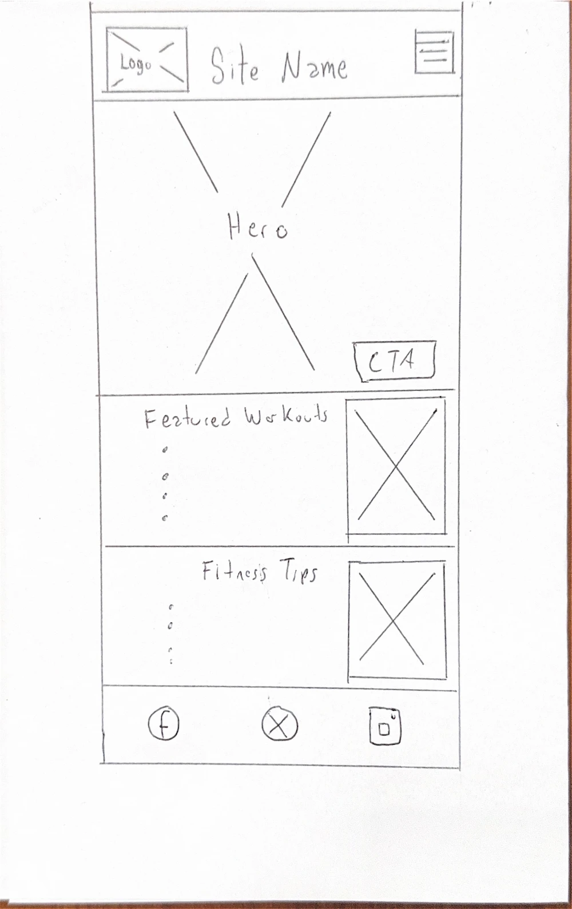
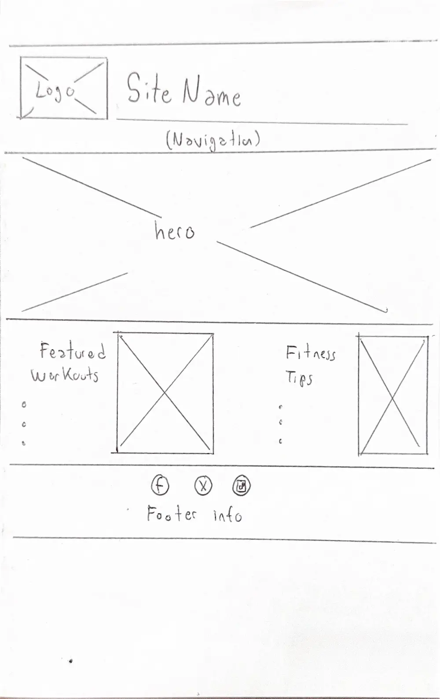

This name was selected because it is short, easy to remember, and clearly communicates the purpose of the website. The site focuses on helping users explore exercises, workout routines, and fitness information to support their training goals.
The website provides fitness enthusiasts with a collection of workout routines and exercise information. Users can browse exercises by muscle group, view workout details, learn proper exercise techniques, and access fitness tools that help them track their progress and improve their training experience.
What exercises should I perform to build muscle in my chest and shoulders?
Which exercises are suitable for beginners who are just starting at the gym?
How can I calculate my Body Mass Index (BMI)?
What equipment is required for a specific exercise?
Used for:
Header background
Navigation
Section headings
Buttons
Used for:
Call-to-action buttons
Highlights
Important accents
Used for:
Page background
Content areas
Used for:
Body text
Paragraphs
Form labels
Used for:
Main headings (h1, h2, h3)
Used for:
Body text
Navigation links
Forms
Buttons

| LOGO / SITE NAME |
| MENU |
| FEATURED WORKOUT |
| FITNESS TIPS |
| FOOTER |

| LOGO | SITE NAME | NAVIGATION |
| FEATURED WORKOUT | FITNESS TIPS |
| FOOTER |